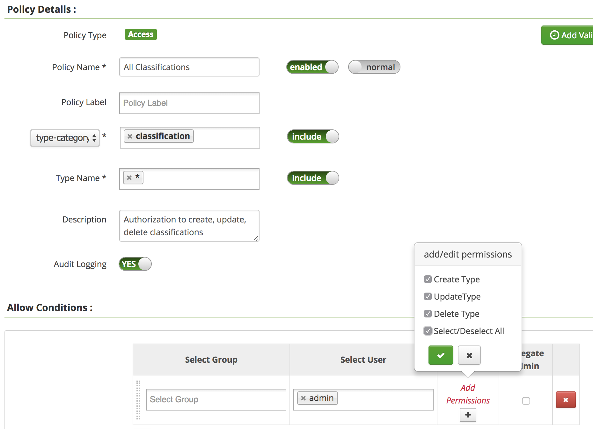
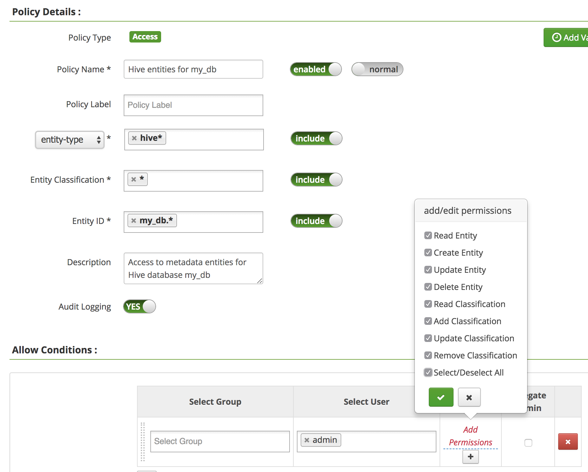
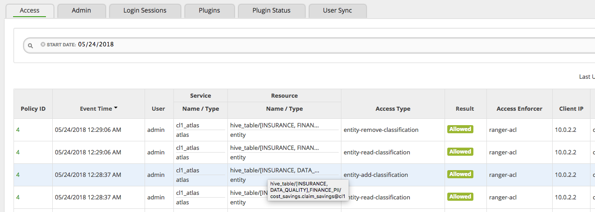

Setting up Apache Atlas to use Apache Ranger Authorization
As detailed in Atlas Authorization Model, Apache Atlas supports pluggable authorization model. Apache Ranger provides an authorizer implementation that uses Apache Ranger policies for authorization. In addition, the authorizer provided by Apache Ranger audits all authorizations into a central audit store.
Configure Apache Atlas
To configure Apache Atlas to use Apache Ranger authorizer, please follow the instructions given below:
- Include the following property in atlas-application.properties config file:
atlas.authorizer.impl=ranger
If you use Apache Ambari to deploy Apache Atlas and Apache Ranger, enable Atlas plugin in configuration pages for Apache Ranger.
- Include libraries of Apache Ranger plugin in libext directory of Apache Atlas
- <Atlas installation directory>/libext/ranger-atlas-plugin-impl/
- <Atlas installation directory>/libext/ranger-atlas-plugin-shim-<version>.jar
- <Atlas installation directory>/libext/ranger-plugin-classloader-<version>.jar
- Include configuration files for Apache Ranger plugin in configuration directory of Apache Atlas - typically under /etc/atlas/conf directory. For more details on configuration file contents, please refer to appropriate documentation in Apache Ranger.
- <Atlas configuration directory>/ranger-atlas-audit.xml
- <Atlas configuration directory>/ranger-atlas-security.xml
- <Atlas configuration directory>/ranger-policymgr-ssl.xml
- <Atlas configuration directory>/ranger-security.xml
Apache Ranger authorization policy model for Apache Atlas
Apache Ranger authorization policy model for Apache Atlas supports 3 resource hierarchies, to control access to: types, entities and admin operations. Following images show various details of each type of policy in Apache Ranger.
- Types
Following authorization policy allows user 'admin' to create/update/delete any classification type.
- Entity
Following authorization policy allows user 'admin' perform all operations on metadata entities of Hive database named "my_db".
- Admin Operations
Apache Ranger access audit for Apache Atlas authorizations
Apache Ranger authorization plugin generates audit logs with details of the access authorized by the plugin. The details include the object accessed (eg. hive_table with ID cost_savings.claim_savings@cl1), type of access performed (eg. entity-add-classification, entity-remove-classification), name of the user, time of access and the IP address the access request came from - as shown in the following image.
